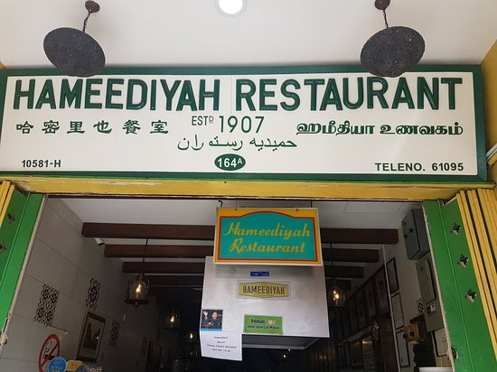
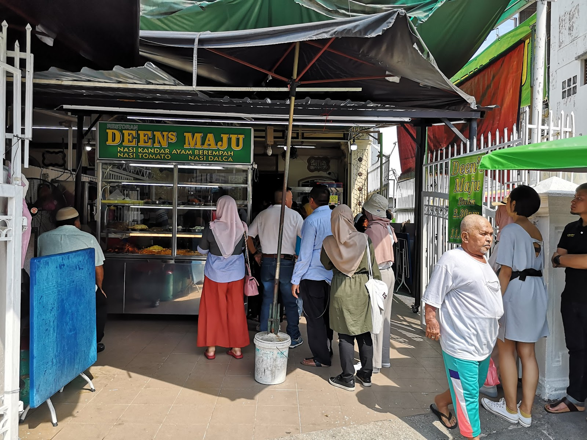
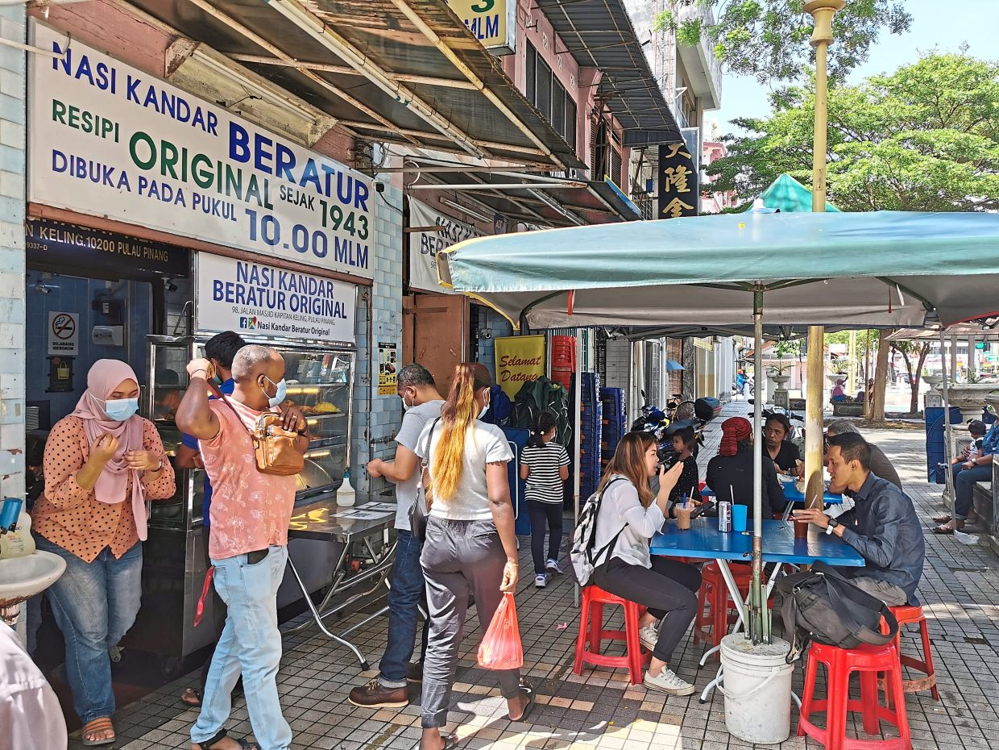
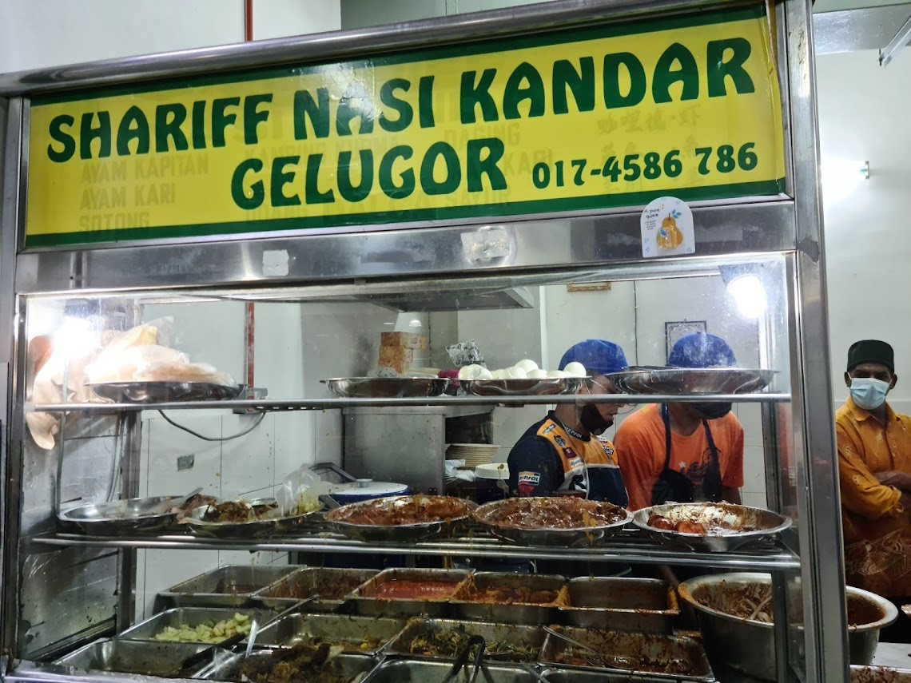
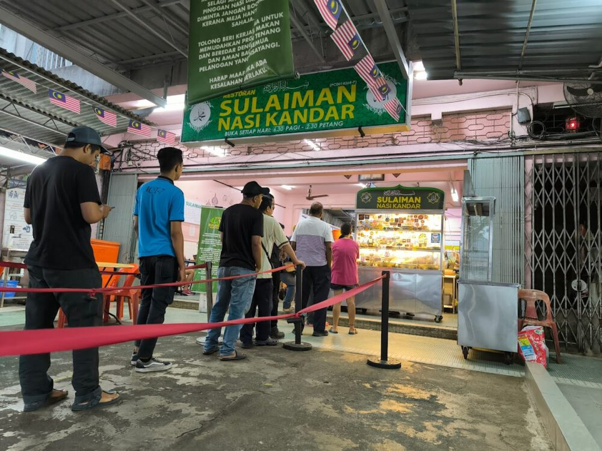

5 Best Nasi Kandar in Penang
Here are the top 5 best Nasi Kandar spot in Penang that you must give it a try!
-
Hameediyah Nasi Kandar
"Address : 164 A, Lebuh Campbell, street, 10100 George Town, Pulau Pinang Operating Hours : 10AM - 10PM
-
Deen Maju
Address : 170, Jalan Gurdwara, 10300 George Town, Pulau Pinang Operating Hours : 12AM - 10PM (Close on Friday)
-
Nasi Kandar Beratur
Address : 98, Jln Masjid Kapitan Keling, George Town, 10200 George Town, Pulau Pinang Operating Hours : 12AM - 6AM, 9.30PM - 12AM
-
Shariff Nasi Kandar Gelugor
Address : Gerai 23, Kompleks Pasar Dan Makanan, Jalan Permai, Taman Brown, 11700 Gelugor, Penang Operating Hours : 5.30PM - 9.30PM (Close on Saturday)
-
Nasi Kandar Sulaiman
Address : 739, Jalan Air Itam, George Town, 10460 George Town, Pulau Pinang Operating Hours : 7AM - 3PM (Friday 7AM-12.30PM)